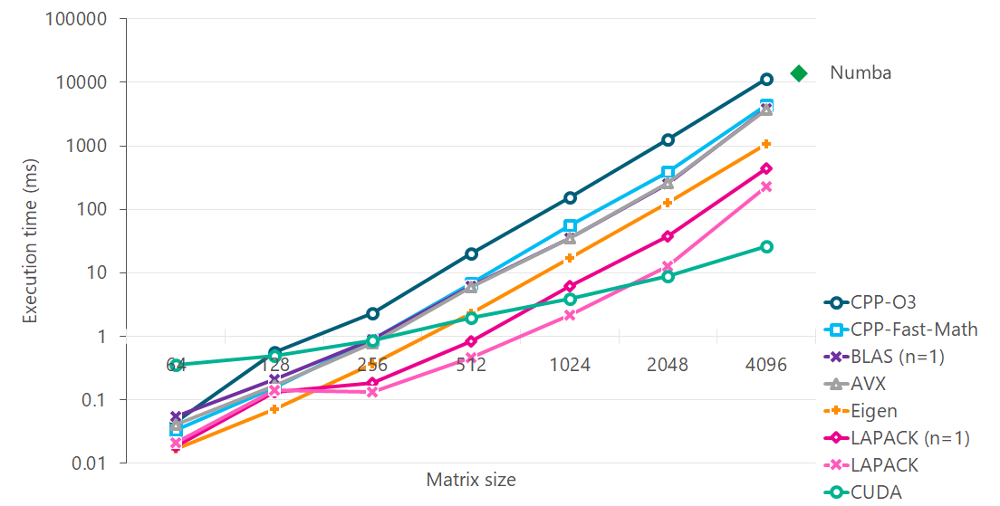

Optimizing C++¶
Discussion on Cholesky decomposition in C++
I used Windows Subsystem of Linux (WSL) to do the benchmarking. There are some differences with respect to pure Linux machines, which I outline where they exist.
Algorithm choice¶
There are two variants of Cholesky decomposition: LL^T and LDL^T. We use the
We will review the following variants of the same algorithm
- C++ with -O3 optimization
- C++ with -O3 and -ffast-math optimization
- C++ with BLAS (single threaded)
- AVX
- Eigen without MKL
- MKL LAPACK (single threaded)
- MKL LAPACK (multi-threaded)
- CUDA
We use LAPACK, Eigen and CUDA implementations to set ourselves a target, rather than to evaluate them. The aim here is to see how far we can go from a pure C++ implementation to AVX one.
{kind=link}
Turbo Boost¶
Turbo Boost was disabled by following instructions here. With Turbo Boost enabled (which is the default), timings are not consistent because the CPU clock frequency changes (as per temperature of the machine). Anaconda uses Intel MKL and I have not tested this on an ARM processor. All timings were taken in Ubuntu 18.04 (Windows Subsystem for Linux). To verify that Turbo Boost is off, you may find it useful to download Intel extreme tuning utility and check that the Max Core Frequency stays roughly constant when running benchmarks.
numactl¶
Intel MKL uses as many threads as there are physical cores on a machine by default. This behaviour can be controlled by setting MKL_NUM_THREADS or OMP_NUM_THREADS, read by MKL in that order, or by tying down the process to specific cores on a machine. numactl allows you to do the latter. Use numactl -C 0 ./testCholesky to run the process on a single core, (only core 0 is accessible on WSL), and then use top to verify that this is happening. WSL apparently only uses a single core, but I did manage to see 200% CPU usage without any of the above measures (for a machine with 2 physical cores).
Selective optimizations¶
GCC provides pragma to selectively optimize a function, i.e. change the compiler flags for a single function at a time. The compile string does not show the actual flags used as those are only printed on a per file basis when calling cmake or make. These flags are, therefore invisible, and hence a little dangerous, but the option is there, should you want to change compiler flags for selected functions. A better way of doing this may be to move code that needs to be optimized to a separate file and changing the compiler flags for just that file. That way the flags will be available for inspection (while allowing the benefit of optimization without polluting other compilation units).
#pragma GCC push_options
#pragma GCC optimize ("-ffast-math")
void functionToOptimize(const float * in, float * out)
{
...
}
#pragma GCC pop_options
WSL does not report the existance of AVX2 and a few other variants of Intel instruction sets via cat /proc/cpuinfo, so you would need to check the Intel processor specifications to determine whether a particular instruction set is available.